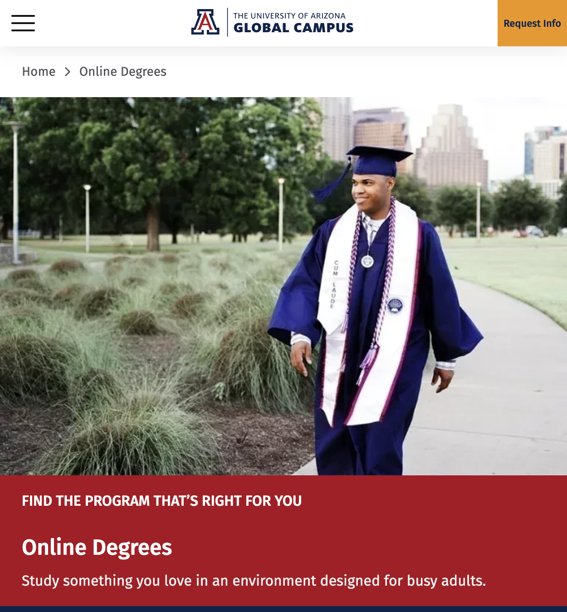

The reskin is improving how the site looks. Now let's also fix how it works. 12 months of GSC, GA4, Contentsquare, and Google Ads data reveal where layout, content structure, and conversion paths are breaking down.
"We have a traffic problem." — No. We have a 627,000-person bouncing problem.
April 2026 — uagc.edu — 11.1M sessions · $8.9M ad spend · 348K conversions
Revised Apr 29, 2026 — incorporates A/B test results (Nov 2025) and Performance Marketing data corrections
/success/request-info-v5: 1.18M sessions, 53.2% bounce, 3.01% conversion. That’s ~627K paid visitors leaving without engaging. We tested sending them to a content-rich page — for Meta traffic, simplicity won. The opportunity is a hybrid: v5’s conversion focus + trust elements.
An A/B test (Nov 2025) showed Meta audiences prefer a page built for one action rather than browsing. But 53% still bounce — the page needs stronger emotional connection, credibility, and concise value props without adding friction.
Not more content. Better content.
60% of visitors are on mobile but mobile engagement is 6–12pp lower than desktop across every page. Paid Social alone brings 1.91M sessions at 42% engagement and 58% bounce.
Paid Social brings the most volume but the worst engagement. The website breaks under that traffic.
The lesson: For cold social traffic, simplicity and emotional connection beat content depth. The 4.5x gap between these pages is mostly channel mix, not page quality. But there’s still a meaningful opportunity: a hybrid page that keeps v5’s conversion focus while adding the trust and credibility elements visitors need to act. Not more content — better content, placed strategically.
| Page | Sessions | Eng. Rate | Conv. Rate | Conversions |
|---|---|---|---|---|
| /success/request-info-v5 | 1,177,574 | 46.8% | 3.01% | 35,498 |
| /success/.../bachelors-v5 | 458,070 | 43.1% | 3.50% | 16,013 |
| /success/military-v5 | 310,713 | 52.9% | 3.07% | 9,551 |
| /success/.../courses-v5 | 262,257 | 74.5% | 7.25% | 19,005 |
| /success/degree-programs-v7 | 221,507 | 74.9% | 13.57% | 30,066 |
The bottom two pages have fewer sessions but nearly equal or more conversions than the top three combined. Better pages beat bigger traffic. If /request-info-v5 converted at even 7%, that's 47K additional leads from existing traffic.
The pages with fewer visitors are outperforming the ones with more. Fix the page, not the volume.

The PhD blog gets people to stay 8 minutes reading about doctoral programs. Then it shows them nothing. No CTA. No link to the doctoral program page. 149K engaged readers, 21 leads. A single contextual CTA could turn 0.01% into 1% — that's 1,490 leads from content that already exists.
H1 (Apr–Oct 2025) vs. H2 (Oct 2025–Apr 2026)
AI overview cannibalization. Google answers “what is a PhD” and “how to write a business plan” before anyone clicks. The site needs to offer what AI overviews can't — and convert the visitors it does get.
Why this matters now
With fewer organic visitors arriving, every session is more valuable. Conversion efficiency goes from “nice to have” to “survival mode.”
The takeaway: pages that answer visitors’ questions convert dramatically better. Same form structure on both pages. The difference is whether the page shows tuition, outcomes, start dates, and program details before the ask. That’s a content and layout fix.
The common thread: they didn't increase ad spend. They fixed the page experience. UT Tyler got +700% RFI conversions. The DTC brand went from 4x to 11x ROAS. When the website converts better, every channel becomes more profitable.
1.18M sessions, 53.2% bounce, 3.01% conv rate. Enrich with tuition, outcomes, start dates, testimonials, and program detail. Target: 7%+ conv (matching our Paid Search pages) = 2x current conversions.
PhD blog: 149K sessions, 21 conversions. Business plan: 75K sessions, 63 conversions. One contextual CTA per post = 2,400+ leads/year. Low effort, high upside.
60% of traffic is mobile. Bounce is 6–12pp higher than desktop everywhere. Chat widget overlap, form placement, and viewport utilization need immediate attention.
/online-degrees (88.8% engagement) and /degree-programs-v7 (13.6% conv) are the models. Document what works and apply to every underperforming page.
Homepage organic clicks down 42%. Blog content down 50%. Investigate AI overview cannibalization and ensure the reskin supports organic recovery.
Our best page converts at 13.57%. Our highest-traffic page converts at 3.01%. The difference isn't the form — it's whether the page answers the visitor's questions before asking for information.
Even a modest improvement — 3% to 7% — doubles conversions from existing traffic. No new spend.
Screenshot all 10 pages (desktop + mobile)
Side-by-side: what content /degree-programs-v7 shows that /request-info-v5 doesn’t
Chat widget + mobile UX audit
Competitor & benchmark validation + subdomain/post-RFI review
→ Complete picture — internal friction + external context
Enrich /request-info-v5 with program content + social proof
Add contextual CTAs to top blog posts
A/B test enriched vs. current /request-info-v5
→ Measurable lifts before the full reskin
Prioritized requirements doc (P0/P1/P2)
Layout patterns from top-performing pages
Present quick-win results → go/no-go on full reskin
→ Build-ready reskin brief backed by test data